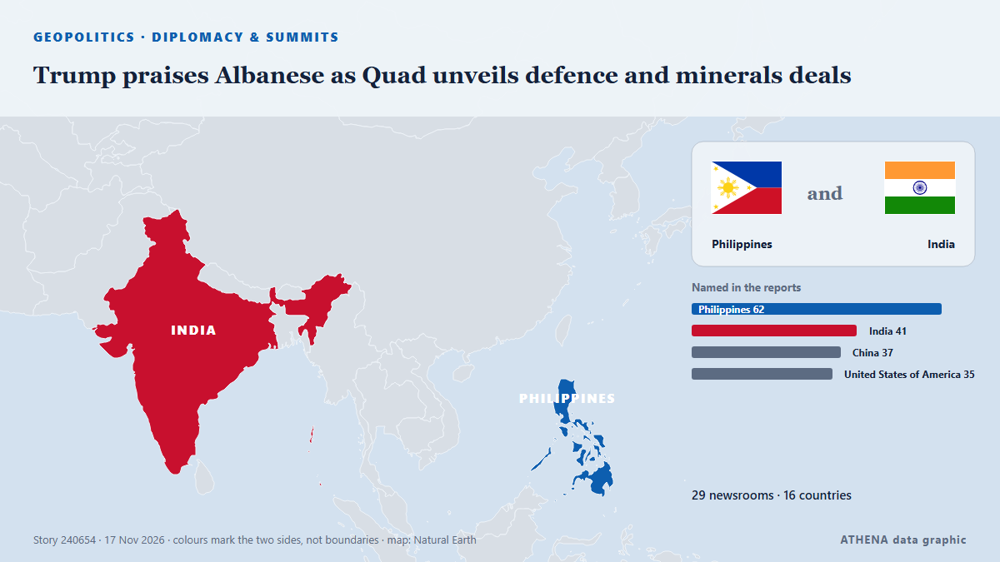

Trump praises Albanese as Quad unveils defence and minerals deals

With major talks in China approaching, US President Donald Trump, Anthony Albanese and their fellow Quad leaders deepen cooperation on defence and technology at a summit in Manila. from ABC News Australia
Reported independently by 30 outlets in 17 countries since 16 Nov, first by The Guardian; coverage is fading. ATHENA rates the risk low (1.4/10), driven mainly by the severity of the harm described and its geographic and sector reach. Confidence is 91% (high), with 30 independent outlets corroborating it and an average source reliability of 72%. Outlets by country: India (18), Australia (5), Pakistan (3). Coverage: 16 Nov to 17 Nov, 28 hours.
Why it matters: Security and diplomatic developments can shift alliances, trade and markets well beyond the countries directly involved.
What changed: 43 new reports from 26 outlets in the 24 hours to 17 Nov.
First reported as: Albanese treads tightrope in upcoming Trump meeting, wanting Indo-Pacific engagement and end to Iran and Ukraine wars
AutomatedSelected, grouped and scored by ATHENA's published method from 26 independent outlets. The headline is the outlet's own; ATHENA's sentences follow fixed patterns - no generative AI writes them. How it works →
How to read this page
- What you are reading
- 30 outlets in 17 countries reported this event. The reports below are listed in the order they appeared; each headline opens the original article. ATHENA writes none of the reports.
- Our reading
- For the record — The reports describe a completed, domestic, commercial or personal matter. We list it so you can see who reported it and when. We are not tracking a risk of wider conflict here.
- How much evidence
- Fair Several independent outlets agree, but the picture could still change.
After repeats, off-topic items and stale reports are removed, 18 of the 40 listed reports are counted; 78% of the headlines match the event.
- What this does not mean
- ATHENA measures how an event is reported, not whether it is true. This is not a forecast, a judgement on who is right, or advice.
- What would change it
- Reports from other independent outlets showing a different development, or a firm confirmation or denial from an official source.
Reading R2 · refreshed with every update of this page. ATHENA has not yet published a track record for these readings; when it does, it will be linked here.
At a glance
Selected, scored and written by ATHENA's published methodology. No editor intervenes in individual events. How this is produced ›
| 16 Nov 09:40 UTC | 1 |
|---|---|
| 16 Nov 11:40 UTC | 2 |
| 16 Nov 13:40 UTC | 0 |
| 16 Nov 15:40 UTC | 0 |
| 16 Nov 17:40 UTC | 1 |
| 16 Nov 19:40 UTC | 0 |
| 16 Nov 21:40 UTC | 0 |
| 16 Nov 23:40 UTC | 4 |
| 17 Nov 01:40 UTC | 1 |
| 17 Nov 03:40 UTC | 1 |
| 17 Nov 05:40 UTC | 2 |
| 17 Nov 07:40 UTC | 1 |
| 17 Nov 09:40 UTC | 10 |
| 17 Nov 11:40 UTC | 14 |
| 17 Nov 13:40 UTC | 6 |
| 17 Nov 15:40 UTC | 0 |
| 17 Nov 17:40 UTC | 2 |
| 17 Nov 19:40 UTC | 2 |
| 16 Nov 15:18 UTC | 0.0 |
|---|---|
| 17 Nov 15:20 UTC | 1.5 |
| 17 Nov 20:45 UTC | 1.4 |
Why these numbers
Importance
Risk
Confidence
The reporting — who reported it, and when
headline as published · opens the original- The Guardian · United KingdomAlbanese signs on to Trump’s AI supply chain pact before leaders’ meeting at Quad summit
- Hindustan Times · IndiaIndia’s diplomatic balancing act: Quad, China and the road ahead with Trump | Point Blank
- The Diplomat · JapanJust by Meeting, Quad Leaders Send a Signal to Beijing
- SBS News · AustraliaThe awkward question hanging over Trump's crucial meeting
- Indian Express · IndiaQuad leaders meet today, signal to China before talks with US, Russia
- Times of India · IndiaTies with Asean crucial for India's Act East Policy: PM
- Express Tribune · PakistanTrump to kick off Asia trip with Quad talks in Manila ahead of China visit
- BusinessWorld · PhilippinesTrump to kick off Asia trip with Quad talks in Manila ahead of China visit
- Business Recorder · PakistanTrump to kick off Asia trip with Quad talks in Manila ahead of China visit
- The Kathmandu Post · NepalTrump to kick off Asia trip with Quad talks in Manila ahead of China visit
- Cyprus Mail · CyprusTrump heads to Philippines for Quad summit amid China tensions
- DW English · GermanyTrump kicks off Asia tour ahead of major talks with Putin, Xi in China
- Gulf News · United Arab EmiratesTrump heads to Manila for Quad talks, Marcos meeting
- Khaleej Times (working feed) · United Arab EmiratesTrump arrives in Manila for Quad talks ahead of China visit
- The Business Times · SingaporeTrump meets regional allies in Manila ahead of China visit, makes AI push
- Anadolu Agency (English) · TurkeyTrump arrives in Philippines for regional summits ahead of China trip
- NDTV World · IndiaPM Modi In Manila For Quad Summit, India-Philippines Defence Ties In Focus
- NPR · United StatesTrump arrives in Philippines to kick off Asia trip
- Sydney Morning Herald · AustraliaDonald Trump touches down in Manila
- Hindustan Times · India‘He's a very tough man and a great leader’: Trump praises Modi during Quad Summit meet
- Times of India · India'Tough man, great leader': Trump heaps praise on PM Modi at crucial Quad meeting
- Hindustan Times · India‘Constructive and trusted’: PM Modi on Quad partnership at Manila Summit
- Indian Express · IndiaToday News Headlines for School Assembly, November 18, 2026: Dhoni’s IPL exit, world leaders gather in Manila for ASEAN, Quad summits
- Times of India · IndiaPM Modi sets Quad agenda, calls for 'concrete goals' to ensure Indo-Pacific security
- NDTV · India"Trusted Solutions For Indo-Pacific": PM Joins Trump, Others At Quad Summit
- Indian Express · IndiaQuad leaders meet in Manila today: Why the grouping matters amid Indo-Pacific tensions
- Deccan Herald · IndiaQuad is a 'trusted partnership' delivering solutions: PM Modi on sidelines of ASEAN Summit
- Business Standard · IndiaQuad is a 'trusted partnership' delivering solutions, says PM Modi
- Express Tribune · PakistanTrump meets key US regional allies in Manila ahead of China visit
- NDTV · IndiaPM Modi By His Side, Trump Repeats "Tough Guy" Praise At Quad Summit
- Deccan Herald · India'Modi a very tough man': Trump during Quad leaders' meeting, says Japan PM Takaichi maybe 'even tougher'
- Rappler · PhilippinesTrump meets regional allies in Manila ahead of China visit
- Times of India · IndiaWatch: PM Modi picks up Tricolour from floor at Quad photo op; Trump reacts
- BusinessWorld · PhilippinesTrump arrives in Manila for Quad talks
- The Irish News (Belfast) · United KingdomTrump arrives in Philippines to kick off Asia trip with economic deals
- Hindustan Times · IndiaPM Modi says Quad meeting in Manila gives fresh momentum to shared Indo-Pacific vision
- Hindustan Times · IndiaPM Modi picks up Indian flag marker during Quad photo op, Trump says ‘save it’
- ABC News Australia · AustraliaTrump praises Albanese as Quad unveils defence and minerals deals
- Sydney Morning Herald · AustraliaTrump’s tough guy joke about Albanese before swift security summit
- The Age · AustraliaTrump praises ‘very important’ Quad alliance, jokes with Albanese in first meeting appearance